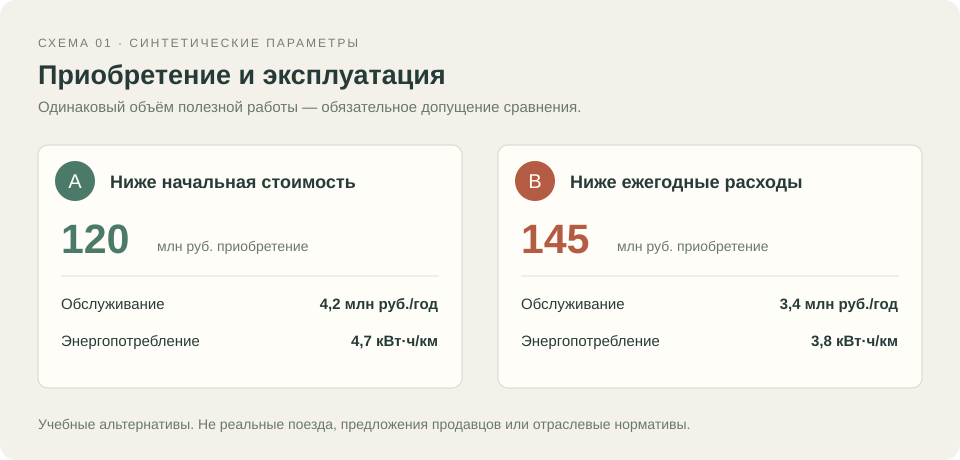
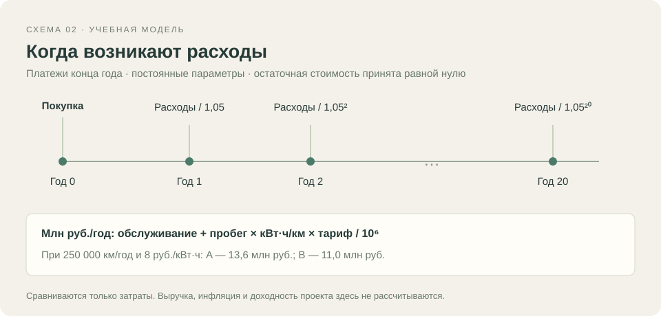

2008 · Учебная глава; дата условная
Экономика подвижного состава
Две альтернативы на горизонте двадцати лет
Версия для чтения и печати. Все тексты, таблицы, иллюстрации и исходники доступны без JavaScript.
Что сравниваем
Более низкая цена приобретения ещё не определяет общие затраты за срок службы. Разница в обслуживании и расходе энергии может изменить порядок альтернатив при увеличении горизонта расчёта.
Здесь рассматриваются два вымышленных варианта подвижного состава A и B. Предполагается, что они выполняют одинаковый объём полезной работы. Этот пример показывает устройство будущей главы о программе ТЭО, а не результаты реального проекта.
Исходные параметры
Вариант A стоит 120 млн руб., обслуживание — 4,2 млн руб./год, энергопотребление — 4,7 кВт·ч/км. У варианта B значения равны 145 млн руб., 3,4 млн руб./год и 3,8 кВт·ч/км.
По умолчанию пробег составляет 250 000 км/год, тариф — 8 руб./кВт·ч, горизонт — 20 лет, ставка дисконтирования — 5% годовых. Параметры синтетические: они не отражают рыночные предложения или отраслевые нормативы.
Как расходы приводятся к одному моменту
Приобретение учитывается в момент начала расчёта. Обслуживание и энергия оплачиваются в конце каждого года. Каждая годовая сумма делится на соответствующую степень 1 + r.
При исходных параметрах ежегодные расходы A равны 13,6 млн руб., B — 11,0 млн руб. Все значения денежных показателей на графике приведены к начальному моменту и выражены в миллионах рублей.
Что меняется при длинном горизонте
К двадцатому году приведённые затраты составляют около 289,49 млн руб. для A и 282,08 млн руб. для B. Разность около 7,40 млн руб. относится только к принятым параметрам этой модели.
Интерактивный пример позволяет изменить пробег, тариф, ставку и горизонт. Статический график и CSV сохраняют исходный сценарий, чтобы результат можно было прочитать и проверить отдельно. Это сравнение затрат, а не расчёт доходности инвестиций.
Границы модели
Расчёт не учитывает выручку, инфляцию, налоги, финансирование, остаточную стоимость, простои, инфраструктуру и детальный график ремонтов. Одинаковая полезная работа двух альтернатив принята как предположение.
При разборе настоящих программ ТЭО потребуется установить состав затрат, базу цен, единицы измерения и назначение каждого коэффициента. Их нельзя автоматически заменить числами или формулами из этого примера.
Иллюстрации


Данные графиков
Приведённые затраты по годам
Синтетический базовый сценарий: 250 000 км/год, 8 руб./кВт·ч, ставка 5%. Платежи конца года, без остаточной стоимости. Сравнение затрат, не доходности.
| Горизонт, лет | Вариант A Приведённые затраты, млн руб. | Вариант B Приведённые затраты, млн руб. |
|---|---|---|
| 0.0 | 120.0 | 145.0 |
| 1.0 | 132.952380952 | 155.476190476 |
| 2.0 | 145.287981859 | 165.453514739 |
| 3.0 | 157.036173199 | 174.955728323 |
| 4.0 | 168.224926857 | 184.005455546 |
| 5.0 | 178.880882721 | 192.624243377 |
| 6.0 | 189.029412115 | 200.83261274 |
| 7.0 | 198.694678205 | 208.650107371 |
| 8.0 | 207.899693528 | 216.095340354 |
| 9.0 | 216.666374789 | 223.186038432 |
| 10.0 | 225.015595037 | 229.939084221 |
| 11.0 | 232.967233368 | 236.370556401 |
| 12.0 | 240.540222256 | 242.495768001 |
| 13.0 | 247.752592624 | 248.329302858 |
| 14.0 | 254.621516785 | 253.885050341 |
| 15.0 | 261.163349319 | 259.17623842 |
| 16.0 | 267.393666018 | 264.215465162 |
| 17.0 | 273.32730097 | 269.014728726 |
| 18.0 | 278.978381876 | 273.585455929 |
| 19.0 | 284.360363691 | 277.938529456 |
| 20.0 | 289.486060659 | 282.084313768 |
Исходный код
Приведённые затраты · Pascal
Новая учебная программа, синтаксис Free Pascal. Не исходник старого проекта Delphi. Стоимость задаётся в млн руб.
program TrainCostDemo;
{$mode objfpc}{$H+}
{ New teaching model for the Almanac mockup. All inputs are synthetic.
Costs are in million RUB; end-of-year payments; no residual value.
This is a cost comparison, not investment profitability. }
const
AnnualDistance = 250000.0; { km/year }
EnergyTariff = 8.0; { RUB/kWh }
DiscountRate = 0.05;
Horizon = 20;
function AnnualCost(maintenance, energyPerKm: Double): Double;
begin
AnnualCost := maintenance + AnnualDistance * energyPerKm * EnergyTariff / 1000000;
end;
function DiscountedCost(acquisition, maintenance, energyPerKm: Double;
years: Integer): Double;
var
year: Integer;
discountFactor, value, annual: Double;
begin
annual := AnnualCost(maintenance, energyPerKm);
value := acquisition;
discountFactor := 1;
for year := 1 to years do
begin
discountFactor := discountFactor * (1 + DiscountRate);
value := value + annual / discountFactor;
end;
DiscountedCost := value;
end;
var
costA, costB: Double;
begin
costA := DiscountedCost(120.0, 4.2, 4.7, Horizon);
costB := DiscountedCost(145.0, 3.4, 3.8, Horizon);
Writeln('A, discounted million RUB: ', costA:0:6);
Writeln('B, discounted million RUB: ', costB:0:6);
Writeln('A minus B, million RUB: ', (costA - costB):0:6);
end.
Эксперимент
Все значения синтетические. Меняйте горизонт, пробег, тариф и ставку; сравниваются приведённые затраты при одинаковой полезной работе. Остаточная стоимость, выручка и инфляция не включены.
Открыть работающий пример (требуется JavaScript).
Материалы
- Допущения и параметры · TXT — Полное описание синтетического сценария и его ограничений.
- Базовый сценарий · CSV — Приведённые затраты A и B на горизонте от 0 до 20 лет. Значения в млн руб.
- Учебный расчёт · Pascal — Исходник новой демонстрационной модели.
Примечания
Год 2008 и все данные этой главы условны. Реальная программа ТЭО не исследована.
Приобретение учитывается в год 0; ежегодные расходы — в конце года.
Сравниваются приведённые затраты, а не NPV проекта с выручкой и не окупаемость инвестиции.
Модель предполагает равную полезную работу вариантов и постоянные параметры.
Исторические цены, единицы и формулы будут определяться по материалам реального архива.